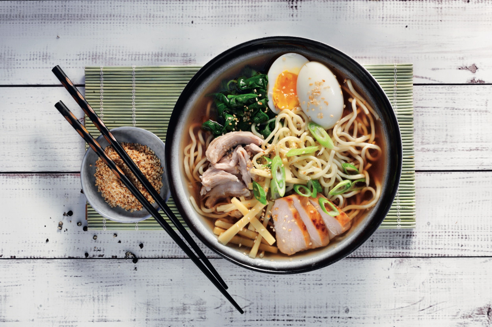

Ramen Recipes

Description
A traditional dish from Japan using buckwheat noodles and special type of animal based broth, such as pork or fish.
Ingredients
- 4 cups vegetable broth
- 4 cups water
- 1 tablespoon soy sauce
- 1 tablespoon sesame oil
- 1 tablespoon ground ginger
- 1 tablespoon Sriracha hot sauce
- 9 ounces soba noodles
- Combine broth, water, soy sauce, sesame oil, ginger, and hot sauce in a pot
- Bring to a boil
- Add noodles to boiling broth mixture and cook until noodles are tender yet firm to the bite, 5 to 7 minutes
- Transfer noodles to serving bowls and top with desired amount of broth